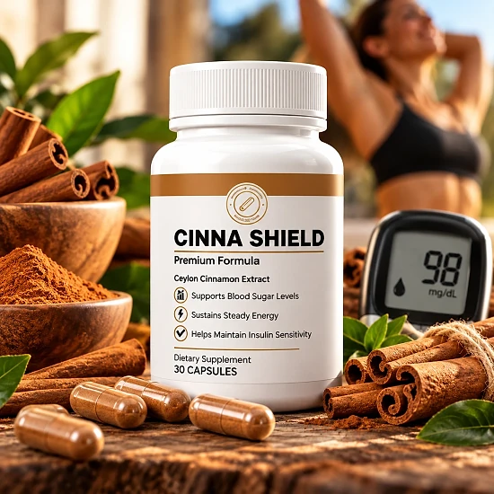

What Is Cinna Shield And How Does It Work?
Cinna Shield is a dietary supplement in capsule form built around a single ingredient: Ceylon cinnamon extract (Cinnamomum verum). According to the official website, it is designed to support healthy blood sugar levels already within a normal range, steady energy, and everyday metabolic wellness.
The brand's main point of difference is the type of cinnamon. Most cinnamon sold in stores is Cassia, which naturally contains more coumarin, a compound that can stress the liver with long-term daily use. Cinna Shield says it uses only Ceylon cinnamon, a lower-coumarin variety, and that every raw-material batch is verified through DNA barcoding to confirm the species.
How is it meant to work? The official website describes three areas: supporting the body's natural glucose metabolism, promoting steady energy between meals without stimulants, and cinnamon's traditional role in healthy circulation. Cinnamon contains polyphenols and cinnamaldehyde, and the website cites published studies on cinnamon and glycemic markers.
The website also presents the formula as stimulant-free, with no caffeine and no proprietary blend, and says the product is third-party tested, made in the USA, and produced under GMP standards.
The brand is clear about limits. Cinna Shield is not a substitute for insulin, prescribed diabetes medication, or a physician-directed treatment plan, and people with diagnosed diabetes or prediabetes should keep following their doctor's guidance and not change their medication based on this product.
The bottle in the product images shows 30 capsules. The official FAQ says most users notice a difference within 2 to 4 weeks and recommends 60 to 90 days of daily use, while also stating that individual results may vary.
Cinna Shield is a dietary supplement. It is not intended to diagnose, treat, cure, or prevent any disease, including diabetes or prediabetes.
Cinna Shield Ingredients
Cinna Shield is a single-ingredient formula. According to the official website, each capsule contains:
Ceylon Cinnamon (Cinnamomum verum) Extract: a standardized cinnamon bark extract that the brand describes as rich in polyphenols and cinnamaldehyde, the compounds associated with cinnamon's role in glucose metabolism.
Why Ceylon matters: Ceylon cinnamon, sometimes called "true cinnamon", contains far less coumarin than the more common Cassia variety. This is why health agencies advise limiting daily intake of Cassia, and why the brand highlights DNA verification as proof of species.
What the website does not confirm: the amount of extract in each capsule is not clearly stated. The ingredients section shows a placeholder that reads "500mg per capsule — confirm exact label amount", so the exact dose should be checked on the bottle you receive. The website also does not show the full Supplement Facts panel or the list of other ingredients, such as the capsule material.
The brand says the formula contains no stimulants, no fillers, no artificial additives, and no proprietary blends.
Cinna Shield Side Effects
According to the official FAQ, Cinna Shield uses low-coumarin Ceylon cinnamon, which is generally well tolerated. The FAQ notes that some people may experience mild digestive discomfort when they first start taking it.
The website advises anyone who is pregnant, nursing, or taking medication to consult a healthcare provider before use, and its disclaimer asks every user to talk to a healthcare professional first.
The most important caution concerns blood sugar. Because cinnamon is studied for its effect on glucose, people who take insulin or diabetes medication should speak with their doctor before adding Cinna Shield, since combining products that lower glucose may require monitoring. The brand itself says the supplement is not a replacement for any prescribed treatment and that medication should not be changed because of it.
People with liver conditions, those scheduled for surgery, and anyone taking blood thinners should also ask a doctor first. Stop using the product and seek medical advice if you notice any unusual reaction. Individual tolerance varies, so pay attention to how you feel during the first weeks. Bringing the bottle to your doctor or pharmacist is an easy way to check for interactions with anything else you take.
Cinna Shield Dosage
The official FAQ recommends two capsules daily with water, preferably with a meal. Taking the capsules with food may also help reduce the mild stomach discomfort that some people notice at first.
There is a detail to keep in mind: the bottle shows 30 capsules and the website describes one bottle as a 30-day supply, but at two capsules a day a bottle would last about 15 days. Follow the directions printed on the label of the bottle you receive.
Consistency is the main recommendation. The FAQ says most users notice steadier energy within 2 to 4 weeks and suggests at least 60 to 90 days of daily use for metabolic support, while the disclaimer reminds readers that individual results may vary.
Do not take more than the recommended amount. If you monitor your blood sugar, keep doing so as your doctor advises, and do not adjust any medication on your own.
Cinna Shield works best as part of a healthy routine that includes balanced meals, regular physical activity, good sleep, and stress management, as the brand's own materials point out. Store the bottle in a cool, dry place and keep it out of reach of children.
Cinna Shield – Refund Policy
According to the official website, Cinna Shield is covered by a 90-Day Money-Back Guarantee. The brand explains that metabolic support takes time, so it offers three full months to try the product.
How to request a refund: the website says that if you are not completely satisfied, you can contact the support team for a full refund, "no questions asked". The support email listed on the official website is support@cinna-shield.com. Include your order number and the email address used at checkout to speed things up.
What is not explained: the website does not publish a detailed refund procedure, a return address, a phone number, or whether bottles must be sent back and who pays for return shipping. Ask support about these points before mailing anything, and keep a record of every message.
Where the order is processed: the order link for Cinna Shield goes through the WealthPay checkout, so keep the order confirmation email you receive, as it contains your transaction details.
Read the terms on the official website before ordering, and note your purchase date so you stay within the 90-day window. Keeping the original bottles and packaging until you decide is also a sensible precaution, in case support asks for them.
Cinna Shield – Where To Buy
Cinna Shield is sold through its official website, and the website states that it is not available on Amazon or eBay. Orders are completed through the official checkout.
Bottles sold by unknown third parties may look the same, but there is no way to confirm their origin or how they were stored, which raises real concerns about quality and safety. For a product built around DNA-verified Ceylon cinnamon, buying from an unverified seller defeats the purpose. Purchases made outside the official source may not be covered by the 90-Day Money-Back Guarantee.
That is why most buyers prefer to order Cinna Shield directly from the official website. Going to the source means getting the authentic original product, with access to the support team and the full guarantee.
Before completing your order, make sure you are on the official Cinna Shield website to avoid counterfeit products. Checking the address before you pay takes only a moment and helps protect your order.
To ensure you’re getting the authentic product, most users choose to visit the official website.
Is Cinna Shield A Scam?
Based on the official website, Cinna Shield appears to be a real dietary supplement, built around a well-known ingredient, Ceylon cinnamon, and designed to support healthy blood sugar already within a normal range, steady energy, and metabolic wellness.
Several points speak in its favor: a single, clearly named ingredient, a focus on the lower-coumarin Ceylon variety, a stated DNA verification process, a list of published references, a clear disclaimer that it does not replace diabetes medication, a support email, and a 90-day money-back guarantee.
There are also important gaps. The website does not show a full Supplement Facts panel, and the dose per capsule appears as an unfinished placeholder. The suggested use of two capsules a day does not match the "30-day supply" of a 30-capsule bottle. The testimonials on the website are labeled as "illustrative examples", not verified customer reviews, which is why this review does not quote them. No manufacturer name, phone number, or address is published.
For adults with blood sugar already in a normal range who want a simple cinnamon supplement, Cinna Shield may be worth considering, ideally ordered from the official website, checked against the label on arrival, and discussed with a doctor, especially if you take diabetes medication.
For those who want to verify product details or check current availability, the official Cinna Shield website remains the safest option.

Check Availability On Official Website